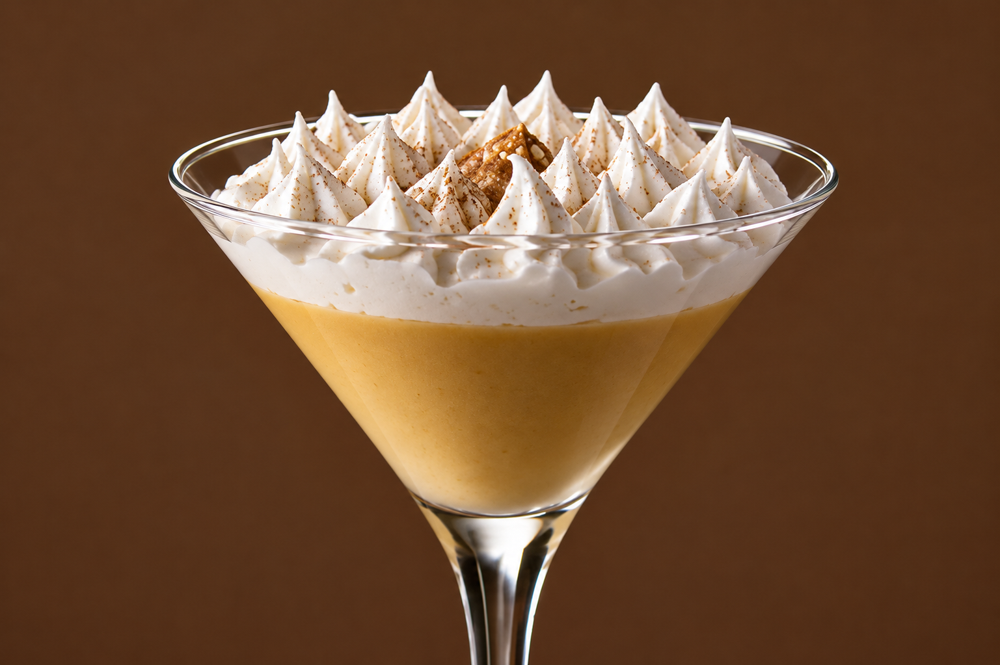
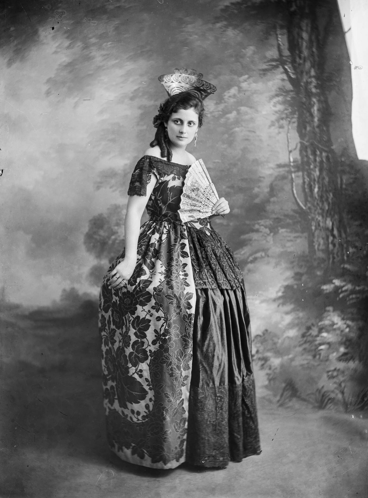
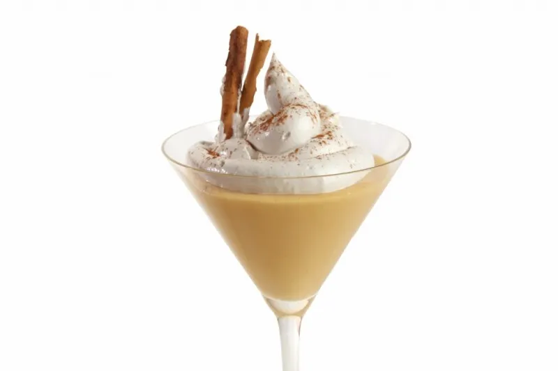
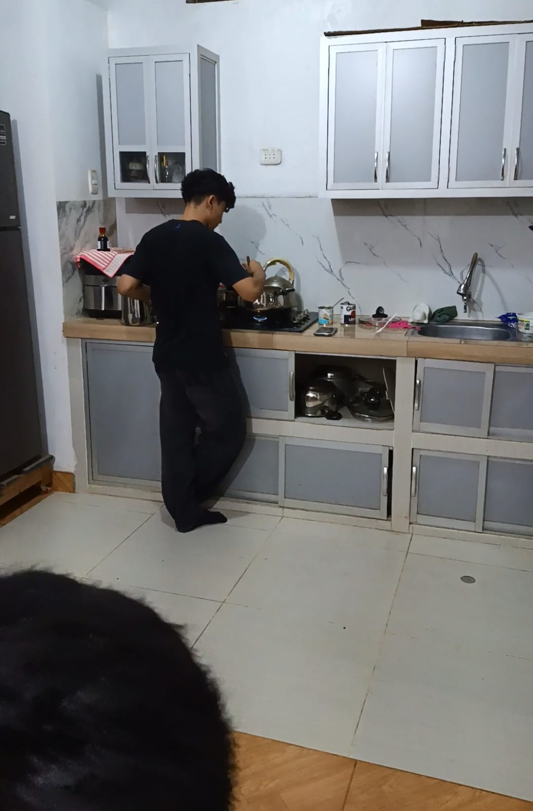

Tradición
Un clásico de la repostería peruana.
UN CLÁSICO DE LA GASTRONOMÍA PERUANA
Descubre el suspiro a la limeña, una exquisita combinación de manjar blanco, merengue y tradición peruana.

MÁS QUE UN POSTRE
Su textura suave, su dulzura envolvente y el toque aromático de la canela hacen de este postre una experiencia inolvidable.
Un clásico de la repostería peruana.
Manjar cremoso y merengue ligero.
Un postre con una presentación especial.

Una tradición que perduraUN POQUITO DE HISTORIA
El suspiro a la limeña es uno de los postres más representativos de Lima, Perú. Su tradición está vinculada a la repostería limeña y a la mezcla de influencias culinarias.
Se prepara con una base de manjar blanco elaborada con leches y yemas, cubierta por un merengue dulce que tradicionalmente puede llevar vino de Oporto. La canela completa su aroma y su presentación característica.
“Suave como un suspiro, dulce como una tradición.”
LOS SECRETOS DEL SABOR
Receta orientativa para aproximadamente 6 porciones.

✦ Marca los ingredientes mientras los reúnes.
MANOS A LA OBRA
Sigue los pasos y crea tu propia versión de este clásico.

Cocina ambas leches a fuego bajo, removiendo hasta obtener una crema espesa. Retira del fuego y agrega las yemas previamente mezcladas y coladas. Cocina brevemente a fuego suave, sin dejar que hierva, hasta integrar. Añade la vainilla.
Disuelve el azúcar con el Oporto al fuego hasta lograr un almíbar. Bate las claras a punto de nieve y vierte el almíbar caliente en hilo fino mientras sigues batiendo, hasta que el merengue esté firme.
Reparte el manjar en copas individuales, coloca el merengue encima con una cuchara o manga pastelera y termina con una pizca de canela. Refrigera hasta servir.
Consejo: utiliza huevos frescos y cocina adecuadamente la crema y el almíbar. Manipula el almíbar caliente con cuidado.
Escanea el código QR que necesites.
Escanea para contactarnos.
Escanea para realizar tu pago.
TRADICIÓN EN CADA CUCHARADA